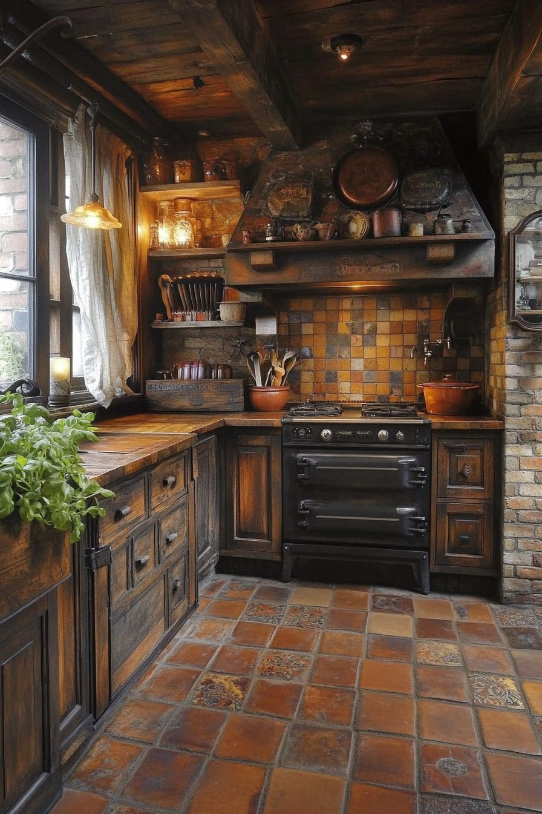
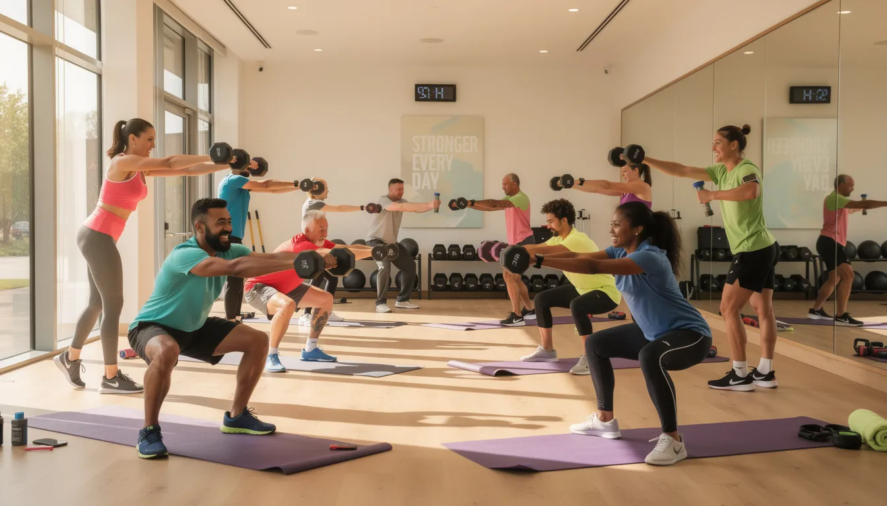

Nichole Blachford
Creativity is in your hands
About Me
My Journey
My entire life I’ve had an infatuation with all things tech. I’d sit with my dad for hours at a time and watch him build programs from scratch, completely mesmerized by the walls of text I didn’t understand. That passion stayed with me, even as I got older, eventually leading me to discover many learning opportunities. Throughout the years, I've experimented with various open-source programs that taught me the basics of various coding languages, including Python, JavaScript, Ruby, C#, and eventually HTML and CSS. I've made many simple scripts, visual novels, and pixel art role-playing games, but once I made my first website, I was mesmerized. It felt like a gateway to show everything else I’d learned over the years and slowly became my favorite, leading me to where I am today.
Education
I started my formal education in coding back in high school, taking my first class and learning React Native, a programming framework developed by Meta that focuses on building apps for mobile devices. I absolutely loved the coding process and ended up signing up for two other coding classes the next year: Python and Web Development. During my senior year of high school, I took the Certiport certification exam for both languages and passed, ending up with two certifications before I’d even graduated. I've since made several personal projects and am currently working through the Web Development Certificate at Ozark Technical College, in the hopes of learning new information and streamlining my current workflow.
My values
Human Led Development
A website is often a customer’s first interaction with a brand or company, making the first impression extremely important. As such, coming across a page written with AI algorithms or filled with fabricated images often comes across as unprofessional or unreliable, maybe not warding potential customers off completely, but at least making some wary. Through the rise of AI generation, I’ve shared the sentiment with others that if you yourself won't take the time to make something yourself, then why should anyone else take the time to care? A website, professional or otherwise, should bear the values of the person or company and reflect a humanity that no algorithm can portray.
As such, all of my work has been and will always be AI-free.
Accessibility
Accessibility may not always be an easy thing to implement, but it is important. Many people think of disabilities as all or nothing, you can see or you cannot, you can hear or you cannot, but that is not the truth. Disability is a spectrum, and for some, that spectrum may change on a day-to-day basis. So while it's important to make it accessible to everyone, even those without disabilities can benefit from accessibility tools. Some use text-to-speech to multitask while still gaining valuable information from articles. Others may use the tab key to navigate a website because their mouse suddenly stopped working. It's only because of these tools that everyday inconveniences have an easy fix, which is why I value taking time to implement as many accessibility tools as possible.
Collaboration & Feedback
Collaboration is a very valuable thing for any sort of project, but web development especially. Both client-side and team-side collaboration is vital, as you can get feedback on layouts, color schemes, and accessibility options early on. Everyone has their own specific ideas and needs, which can help identify wants or needs of a user before the website is live, leading to much smoother implementation. For larger teams, collaboration is also important, as where someone struggles, someone else can help and educate, not only moving the project along faster, but helping others learn and grow in the process. As such, I value collaboration and love getting as much feedback as possible, both positive and negative.
Portfolio Highlights

Revival Woods Rentals
This is a website for a fictional bed and breakfast inspired resort called Revival Woods. This project focused mainly on navigation, tables, and form use, without the use of bootstrap.

Fitness for Fun
This is a website for a fictional fitness club, seeking to get new members to join various workout sessions. The main focus on this project was to get used to working with bootstrap and work on making mobile-focused websites.

Popcorning Piggies
This is a website for a fictional guinea pig boarding service. This project focused on working with a grid based webpage and practicing more bootstrap elements.